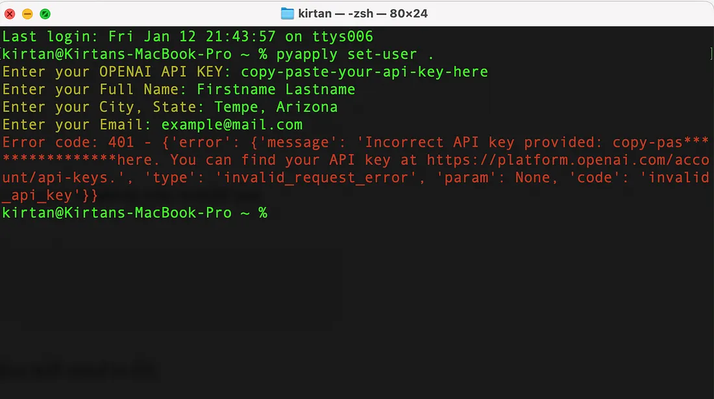

PyApply — GenAI App for the automation of job Applications
Demo
While navigating the job application process, I encountered numerous tedious and repetitive tasks that consumed valuable time. In response, I developed an application aimed at streamlining and automating the cumbersome aspects of applying for positions at ASU.
This app reduces the time spent on each application, transforming the process from 5–10 minutes per application to 5 seconds — quite literally.
Key challenges it addresses:
- History Management: After securing an interview, it's often challenging to recall the specific details of the job description. This issue arises because ASU job postings are removed once the interview phase commences. Manually managing this information, such as saving your cover letter, resume, and job description, can be laborious. This app seamlessly solves this crisis by automating the process, ensuring you have instant access to the relevant job details even after the posting is taken down.
- Customized Cover Letters: Crafting personalized cover letters for each job, tailored to the specific position and the custom resume you wish to submit, is time-consuming. This application simplifies this by generating cover letters perfectly suited to the job at hand, significantly reducing the effort required on your part.
In essence, this app is designed to enhance your ASU job application experience by not only saving you time but also ensuring that you have a comprehensive record of your applications and tailored materials for each position. Streamlining these processes allows you to focus more on securing the opportunities that matter most to you.
USER GUIDE
DOWNLOADING…
First, let's download the CLI application. You will require Python installed and configured in your system. there are plenty of tutorials available.
PyPI
This app is available on the Official Python Package Index. So Downloading it is pretty simple.
pip install pyapplyCheck if it is downloaded correctly
pyapply aboutIf you face an error, Try
python -m pyapply aboutif this works for you, from here on, add "python -m " before 'pyapply' to all the following commands.
CONFIGURING USER DATA
before we configure the user data, we will need a Chatgpt API key. You can follow this tutorial to get the key.
Now let's Configure the user data…
pyapply set-user <path/to/save/history>so, for example, To save the history on your desktop you would use
pyapply set-user ~/DesktopNow, There will be a Prompt form You will need to fill

example user form
Note: Here I used an invalid GPT key so it showed me an error, But if u paste in a Valid key, You will get greeted by Chatgpt
CONFIGURING RESUME
Yes, This app will use your resume as a reference while applying to jobs.
The good thing about having a different command to set up a resume is, If in case u decide to change your resume for a job, you will run this command once more. Copy and paste your resume on a 'resume.txt' file and leave it on your desktop
pyapply set-resume <path/to/resume.txt>Example command
pyapply set-resume ~/resume.txtIf you do this correctly, you will receive a Success Message on your terminal
ALL DONE
Final command
pyapply listenthis will start a listener,
When you copy any Text on your machine,
It will check for job IDs that end in 'BR'. If found, it will generate a cover letter on your desktop (or wherever you set your user )
asujobs/history/jobidHAPPY JOB HUNTING!
Few Important things to keep in mind.
- This tool is not meant to be used to spam hiring managers.
- Chatgpt is not dependable, always go and proofread your resumes.
- You are to use this app on your own accord, it is the sole responsibility of the user when they use this app. No responsibility will be taken by the authors.